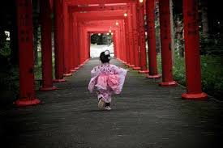
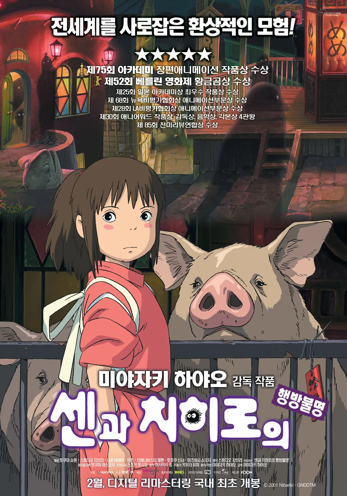
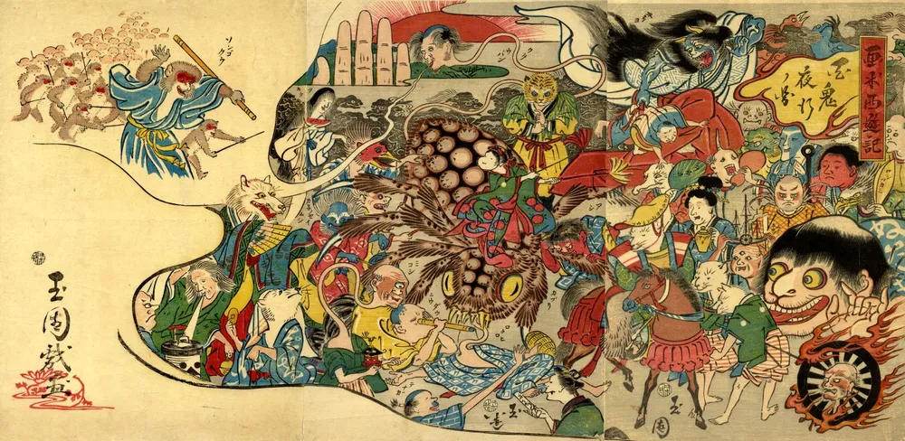
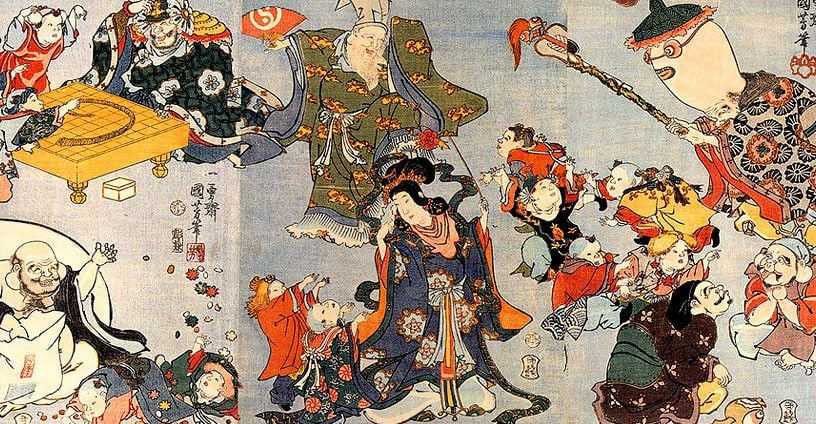
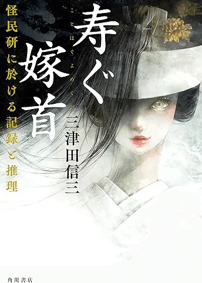

카미카쿠시 神隠し
직역하면 '신이 숨겼다'
전근대 일본에서 사람(주로 7살 이전의 아이)이 갑자기 흔적도 없이 실종되면 신이 데려갔다고 여겼던 전승이다.
카미카쿠시가 일어나는 원인은 여러 가지가 있지만
사진처럼 수상한 토리이(일본 신사 톨게이트)를 지나가는 것이
카미카쿠시가 일어나는 가장 대표적인 트리거라고 할 수 있다.

센과 치히로의 행방불명에서
행방불명이 바로 카미카쿠시를 번역한 것이다.
영어판 제목은 Spirited Away(유괴당하다)
그래서 신이 데려가면 어떻게 되냐고?
바로 위에 치히로처럼 유사 군생활 할 수도 있는 거고
한 가지 오해하면 안 되는 게
여기서 말하는 카미는 신 말고도 요괴나 기타 영적 존재를 포함한다.

그래서 이런 애들한테 걸리면 좆됐다고 보면 되고

반대로 사당에 모시는 '신토'의 신이 데려가면
나름 인권이 보장될 수도 있고

행복회로를 굴려보자면 이렇게 생긴 요괴 누나한테 보쌈혼 당해서
평생 시종으로 살며 밤마다 수청을 들게 될 수도 있다.
지금까지 카미카쿠시 전설에 대해 알아봤고
나는 여권을 챙기러 가보겠다.
너 7살 전후냐?